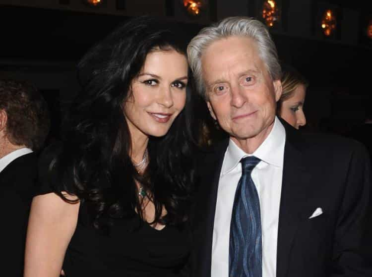
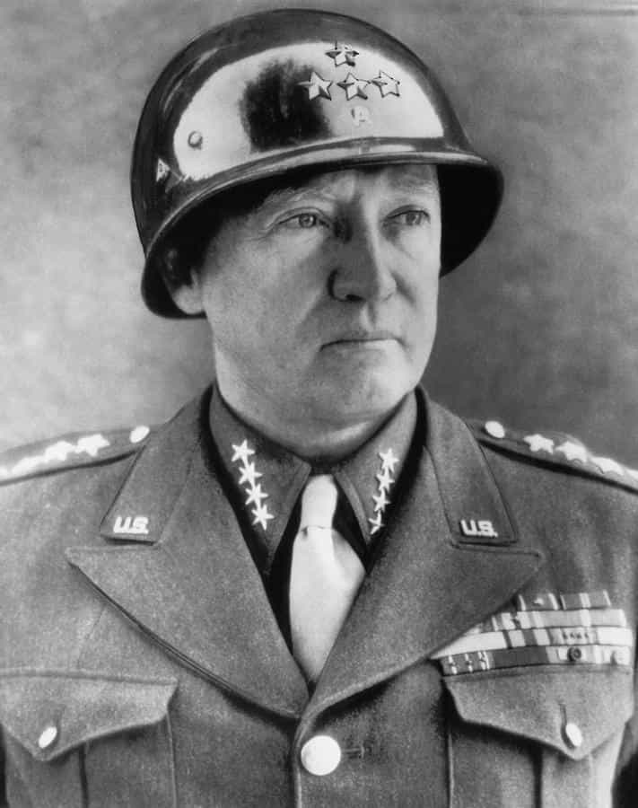

Michael is the author of Staying Married in a Degenerate Age. Follow him on Twitter or Facebook. You can read more of his writing at Honor and Daring.


Most of the time, celebrities put up a false front. The image they want to project is that their lives are interesting, fulfilling, and involve stimulating relationships with other popular people. But every now and then, a celebrity lets the mask slip. This is exactly what happened to conservative pundit Ann Coulter when she criticized Senator Marco Rubio’s support for increasing the child tax credit.
We singles live empty lives of quiet desperation and will die alone. Now Rubio is demanding that we also fund happy families with children who fill their days with joy.
— Ann Coulter (@AnnCoulter) December 15, 2017
Basically, Ann’s point is that single people shouldn’t be forced to fund married people having children, but what she inadvertently revealed is that she has some unhappiness at facing the prospect of being a childless spinster.

Both men and women are affected by the possibility of being childless. But let’s face it, women have the shorter end of the stick in this case.
As a man, you are able to sire children up until you die unless an accident or health issue precludes that possibility. A few years back there was a story of a Chinese warlord who sired a child with a concubine when he was in his late 80s.
Women, on the other hand, are much more limited. Women are able to become mothers up until they hit menopause. The average age for menopause is 51, although some women begin to experience it in their 30s. Even though a woman may not be in menopause, the longer a woman waits, the more difficult it becomes to conceive a child. A woman’s likelihood in getting pregnant peaks in her early 20s. By the time she is in her early 40s, a woman has only a 36 percent change of getting pregnant.
Many women are delaying having children with the idea that advances in medical technology will make up for the decrease in fertility as they age. Unfortunately, fertility treatments are expensive and not as foolproof as we’d like to imagine. Many couples wake away bitterly disappointed.
But just because men have a longer window doesn’t mean you should delay indefinitely. The idea is not to just spread your DNA. Rather, you want to establish a legacy. To do that, you will want to raise children. To do that you need to be around for their formative years between birth and 18. Starting when you are a 90-year-old warlord, while it may be fun, would result in your wife (or concubine) raising your children. That makes it less likely that you will pass on your beliefs and wisdom.
The sweet spot for fathering children is probably in your late twenties or early thirties. That way, you will still have the energy to chase your kids when they are small, but you still stand a good chance to see your grandchildren to further cement your legacy.

Getting married and having children is the best way to ensure you have a legacy. But I need to be honest: not everyone is going to get married. It could be because of a physical defect or because there are just not any suitable spouses available. Many men find themselves in the latter position today. They are able to provide for a wife and children but there are no suitable women available. Should these men just give up and resign themselves to an empty life?
The black pill may be tempting but it is always a mistake to take it. Life can be fulfilling even without a wife and children. In some ways, it can be better. If a man marries poorly, his wife can make his life a living hell by nagging or cheating on him. And modern divorce laws are stacked against men. A man can invest years into building a legacy for his children only to have his wife destroy it all after watching Eat, Pray, Love. Better to be single and happy that to be married to a scold or a slut.
So how does a single man achieve happiness and create a legacy for the future? There are three paths.
The first way is to become involved in the lives of your nephews and nieces, or other children in your family. My wife has an aunt who is a spinster. She has made a point of staying very close to my children, who consider her another grandmother. This has made my wife and me closer to her as well—we have sort of become the children she never had.
A second way is to benefit your community by becoming a great leader in the military, politics, medicine, academia, or industry. To help your community in a big way requires dedication and any family man is going to have competing factors on his time. But a single man will be able to throw himself into any endeavor with all of his might. Take that military leader General George Patton: would his greatness have been possible if he had a wife and children at home?
The third way of leaving a legacy was obvious in the past but is the path less taken today—that of dedicating one’s life to religion. St. Paul promised that those who have given up wives and children for the sake of the gospel would not fail to receive many more spiritual children in return. In the early church, men who dedicated their lives to Christ were regarded as God’s shock troops. Becoming a priest or monk is only for men who have faith. For those who do, it can be a way to become part of a much greater mission to change the world for the better while also participating in a community that will be there to take care of you in your old age.
A life as a carefree bachelor can be very fulfilling in the short to mid-term but it carries a big downside in that you run the risk of establishing no permanent bonds. As one ages and comes to face his ultimate destiny—death awaits us all—he naturally wants to have that sense of connection to something greater than himself. Having children is a way to experience this connection.
Read More: Will You Pay The Bill For The Coming Spinster Bubble?